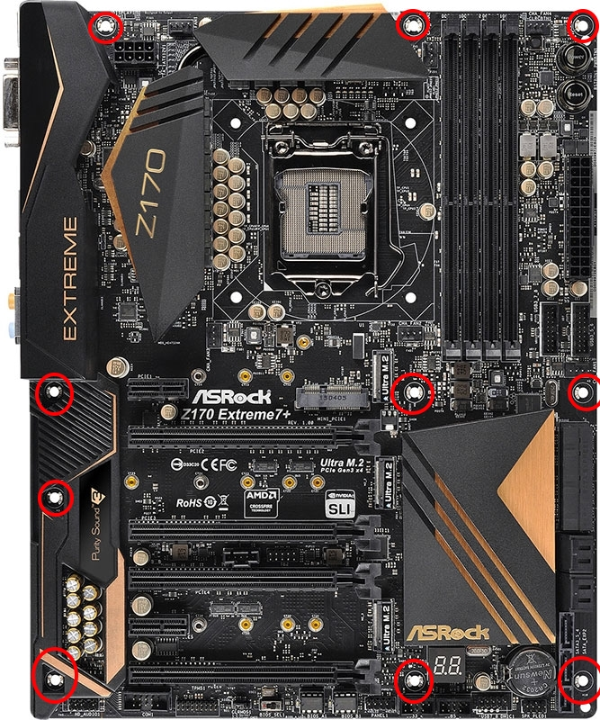
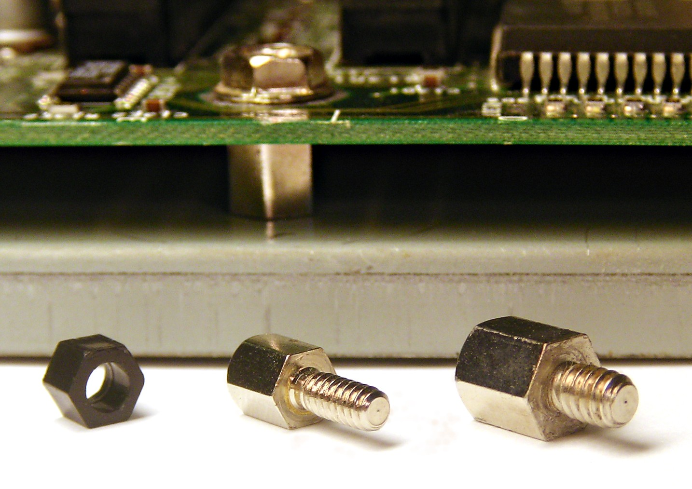

Installing the Motherboard!
The motherboard is the component that everything plugs in to. You've worked with it already, but now we'll put it in the case!
You will need the screwdriver for this part.
This process will require you to prep your case, and you will also need a steady hand for placing this inside the case.
Click any images on this page to open them in a separate tab/window for better viewing.

Steps:
- You will first need to put the standoffs in place. These are tiny screw-like pegs that come with your PC case (seen to the left). They have a hole in the top for screwing down the motherboard. You will want to eye the placement of screw holes in your motherboard (highlighted in red in the images) and line them up with the holes in your PC case (highlighted in red in the case image at the bottom). Each board will have its own placement of standoff screw holes. You need to eye it yourself before putting the standoffs in your case. To put them in, they will screw in by hand. No screwdriver is required for them.
- Once again, the standoffs must be where they need to be. Once you have put them in the case, gently place the motherboard in the case to ensure they line up with the screw holes.
- Once you have ensured the standoffs are in place, take your I/O shield (the metal sheet with holes cut in it for your different ports) and put it in the case, where the biggest remaining hole is available. This will need to be oriented the way the motherboard is place, or you won't be able to fit the motherboard inside. Make sure it is turned the correct way, then push it into place (refer to your manual for further instruction). This will require some force. You will feel it pop into place when it is ready. Be careful not to cut yourself on the potentially sharp metal.
- When the I/O shield is in place, you can put the motherboard inside. Tilt it with the left side going in first, lining up the ports with the holes in the I/O shield. Lie it flat and make sure you push the ports through the holes in the I/O shield so that they will be accessible and so that the screw holes will line up with the standoffs.
- Begin taking the screws that come with your case (refer to the manual for identification) and screwing them through the motherboard hole and into the standoffs. This will keep the motherboard from being damaged by the metal of your case.
- Once everything is secured, you should double check your screws, standoffs, and I/O shield orientation. This is an important step, and it will save you trouble if you check all of this now.
It's important to check the manuals of your motherboard and case, for identifying all items required. This guide cannot predict every configuration you may have.
If you need a better idea for what the I/O shield looks like, click here for an image. Remember: the ports must line up with the shield once it is in the case!
Once you are done, the PC should look near finished! You should have full access to the ports on the back, and the motherboard should not move if you push on it.
We're almost done! The next step is optional, but if you want to game, you will need a graphics card!